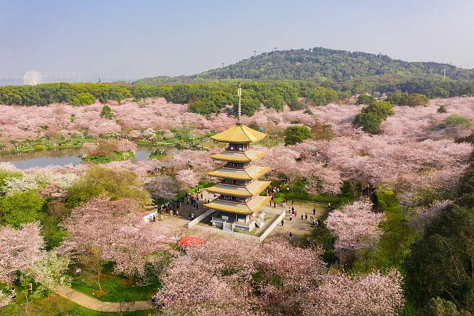

黄鹤楼：江南三大名楼之一，始建于三国时期，见证武汉千年历史变迁，是武汉城市文化的标志性符号
武汉历史文化探索
武汉作为历史文化名城，拥有3500年的建城史。我们深入探寻黄鹤楼的诗词文化、古琴台的知音传说、晴川阁的三国故事，感受这座城市深厚的历史底蕴。通过实地走访和专家讲解，带您领略武汉作为楚文化重要发源地的独特魅力。
青春研学队
青春研学队致力于挖掘湖北各地的青春故事与文化内涵，通过实地探访、交流研讨等形式，带领大家感受不同时期荆楚青年的奋斗激情。我们走进三峡工程、希望小学、纪念馆等地，记录青春足迹，传承奋斗精神，为传播湖北青春风采贡献力量。
三峡水利枢纽工程：1994年正式兴建，承载几代人梦想，2024年团中央为青年团队授旗，彰显青年担当

武汉长江大桥：万里长江第一桥，1957年建成通车，连接龟山蛇山，见证武汉作为九省通衢的重要地位
武汉现代发展巡礼
武汉是中部地区的经济中心和科技创新高地。我们探访光谷科技园区的创新企业，了解武汉在光电子、生物医药等领域的领先成果；漫步楚河汉街，感受传统与现代融合的都市魅力；参观武汉体育中心，感受这座城市的活力与动感。
武汉美食文化体验
武汉美食文化源远流长，户部巷的热干面、豆皮、面窝等过早文化闻名全国；吉庆街的夜市文化展现了武汉的烟火气息。我们走进这些美食聚集地，品尝地道的武汉味道，了解美食背后的历史故事和民俗文化，感受武汉人的生活态度。
热干面：武汉过早文化的代表，以其独特的制作工艺和口味成为武汉美食文化的一部分

东湖：中国最大的城中湖，湖光山色，风景秀丽，是武汉市民休闲娱乐的好去处，也是武汉生态文化的重要象征
武汉风景文化
武汉拥有丰富的自然景观资源，东湖、磨山、木兰山等风景名胜区吸引着众多游客。我们探索东湖的生态文化、磨山的楚文化、木兰山的宗教文化，感受武汉山水之间的文化底蕴。通过徒步、骑行等方式，带您领略武汉的自然之美。